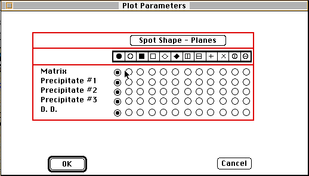

Distributed By: Virtual Labs
Plot Parameters Dialog Box
PATH...Parameter Menu:Set Plot Shapes

Set Plot Parameters Dialog Box
Use the Set Plot Parameters Dialog Box to:
Specify the manner in which the plotted diffraction patterns will be displayed.
Plot Parameters:Spot Shape;The next section of the Set Plot Parameters Dialog
box determines the shape of the spot plotted by Desktop Microscopist. The
default setting is filled circles. The .i.Spot Shape; legend is a graphical
summary of the symbols available for plotting spots. Clicking on the appropriate
radio button specifies the symbol used when plotting the given crystal.
To set the shape for directions click on the Spot Shape - Planes button
and the legend will become Spot Shape-Direction. The legend of the button
indicates whether or not planes or directions are being specified. The buttons
Revert to Previous Defaults and Set Defaults to Current are used to manipulate
all of the standard, stored data types. Clicking on the Set Defaults to
Current button will insert the correct four crystal definitions with elastic
constants and shape information, the three sets of orientation relationships,
and the beam definitions into the default parameters, while the Revert to
Previous Defaults button sets the current parameters to the stored default
values. When using these two buttons, keep in mind that they are irreversible.
Clicking either of the two buttons will make the current and default values
equivalent.
Author: J.ames T.
Stanley
 Desktop
Manual:Dialog Boxes
Desktop
Manual:Dialog Boxes
Distributed By: Virtual Labs
Last Updated:1/12/96 Sat, Apr 27, 1996